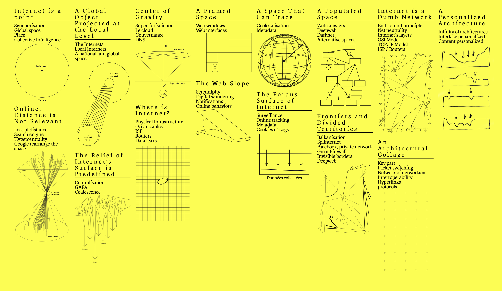
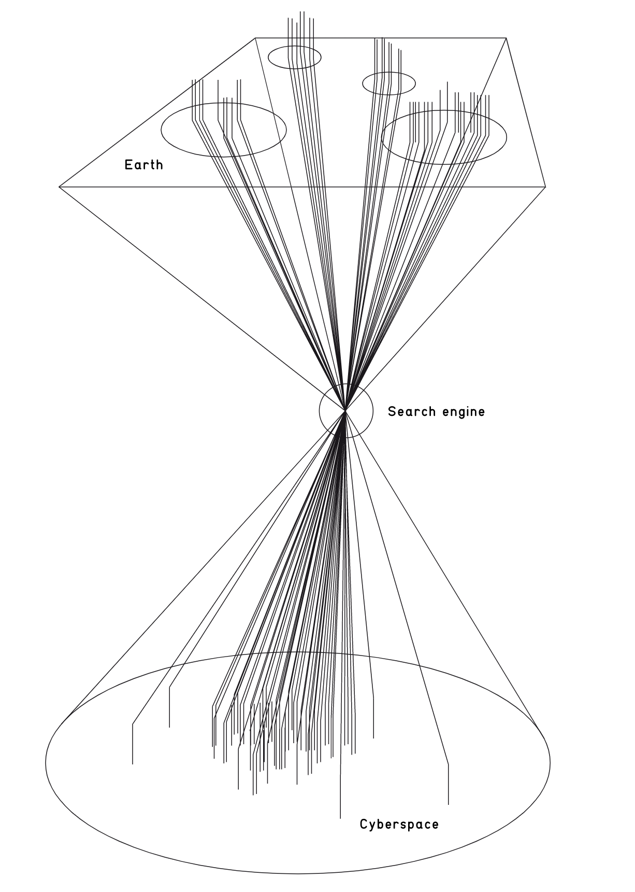

Search has co-opted the citation, vis-à-vis the hyperlink
The post-WWII ‘information explosion’ meant that we have a lot of info and not great means of looking through it to find what we want. This is a form of information retrieval and way of answering questions.
Inefficient search leads to
- knowledge gaps
- errors
- repeating research
- times spent searching
- knowledge silos
Finding stuff is hard because
- theres a lot of things (large haystack, small needle)
- semantic meaning and intention is hard to extract/understand
- search systems are not complete
- individuals have different requirements for what they are looking for (is it possible to create personalized search engines?)
Good way to prototype search system is to analyze the typical dimensions that users search for things along and build those in. There should be support the five interaction strategies
- browsing
- known item searching
- analytical searching on one or more of the facets
- empirical searching based on user profiles
- similarity searching
Search is a form of recommendation system
Essay on Bias in Search
Queries on information
How do we convert a query into subject words and then locate these words in the catalogue if people describe things differently? How do we resolve synonyms?
Increasing number of words that describe an item will increase recall at the cost of precision.
Precision/recall trade-off
The trade-off between recall and precision decides whether a search finds all relevant documents (high recall) or only relevant documents (high precision).
On Ads
When you monetize via ads, curation takes a backseat to featuring advertisers - there is just less digital real estate available to curate your own recommendations. This creates trust gaps between users and search engines.
The search box versus the feed; intentional browsing vs being served by an algorithm
Is it possible to move away from the ‘feed’-based model of browsing the social internet?
The “feed”–an archaic form of content consumption that is effectively just a direct visual manifestation of the data structure that powers it – is a medium that is effectively designed to be consumed alone. –Humphrey Obuobi
“I realized that the experience of research is exactly opposite to the way I usually often encounter information online. When you research a subject, you make a series of important decisions, not least what it is you want to research, and you make a commitment to spend time finding information that doesn’t immediately present itself. You seek out different sources that you understand may be biased for various reasons. The very structure of the library… allows for browsing and close attention. Nothing could be more different from the news feed, where these aspects of information—provenance, trustworthiness, or what the hell it’s even about—are neither internally coherent nor subject to my judgment. Instead this information throws itself at me in no particular order, auto-playing videos and grabbing me with headlines. And behind the scenes, it’s me who’s being researched.”
Boutique Search Engines
We’ve returned to the curated web with Notion, Airtable, and Readwise collections.
What started as a well-intentioned way to organize the world’s information has turned into a business focusing most of its resources on monetizing clicks to support advertisers rather than focusing on the search experience for people.
The big thing here is that horizontal/‘universal search’ sites like Google use the same interface to search everything, relying on natural language to decipher user intentions. Vertical search players like Yelp/Zillow filled the functionality and relevancy gaps by using more structured search formats appropriate to the medium.
Curation, when thought of in the context of sharing bite-sized, isolated bits in feed-like architectures, is predominantly about entertainment, not utility. How do we move beyond the search bar in an attention economy?
But if we curate, who curates the curators? We then run into a meta-governance problem. Mirror’s Token Race appears to be a good start to answering this question.
Search Engine to Oracle
Source: Language models like GPT-3 could herald a new type of search engine in MIT Technology Review
Transition from aggregator of information to oracle
- Pagerank: rank literally whats relevant, asks the user to determine what info they want to actually use
- Oracle: just tells you the ‘right’ answer
“The idea is that instead of searching for information in a vast list of web pages, users would ask questions and have a language model trained on those pages answer them directly. The approach could change not only how search engines work, but what they do—and how we interact with them”
Metzler and his colleagues are interested in a search engine that behaves like a human expert. It should produce answers in natural language, synthesized from more than one document, and back up its answers with references to supporting evidence, as Wikipedia articles aim to do.
See also: LLMs
Search Engines as Faith
They freely provide, it seems, a sorting of the wheat from the chaff, and answer our most profound and most trivial questions. They have become an object of faith. Many view the results of search as objective.
“Like gods, these mathematical models were opaque, their workings invisible to all but the highest priests in their domain: mathematicians and computer scientists.” (Cathy O’Neil)
They are the database of our intentions. We search for things we are hoping to know, hoping to do, and hoping to become
Federated Search
Federated search is a technique used to search multiple data sources at once. With federated search, you can retrieve information from many different content locations with just one query and one search interface.
See: Prolly Trees
Internet topology as shaped by search engines
Source: Critical Atlas of the Internet


The first cone represents the loss of distance. As shown in the picture previous hypothesis, terrestrial space converges at a specific point. On Internet, distance is not relevant. Everything is potentially one click away. The second cone reintroduces the notion of non-physical distances. On the Internet, distance has no relevance, but the notion of space nevertheless remains.
See also: internet computing, Internet
Search engines create an embedding space for the world that maps from physical to digital. Page ranking is the function that maps and remaps the ‘location’ and relatedness of real concepts.
The Vocabulary Problem
Is this a form of hermeneutical injustice?
- Lexical Ambiguity: the meaning of human language is not specific
- Polysemy: one word has many meanings
- Synonymy: many words mean approximately the same thing
Text Processing
Similar to practices in reflect NLP processing actually!
- Lexical Analysis: break text into tokens
- Bag of Words
- Transformations
- Case folding: convert all to lower case
- Stopwords: remove words that contribute semantic meaning/indexing value
- e.g. words that don’t reduce information entropy
- for example, words that appear in all documents are not very helpful
- zipf’s law, first ~5% are stop words, next ~45% are meaning content words and the last ~50% are long tail rare words
- Stemming: grouping of related words (e.g. cats/cattiness → cat)
- Term Weighting: assigns weights on basis of importance to document
- term frequency (TF): occurrences in a
- document frequenc (DF): # of docs containing the term
- term weight is usually where is the total word count
- Index: unique id to a single document
- Inverted Index: index which each entry holds list of pointers to all items with a certain property (e.g. title)
Generations
- Pre-1998: keyword frequency and boolean operators
- 1998-2010: link structure (page rank), keywords
- 2010-2015: user data, personalization, NLP
- 2015-now: AI, deep learning
Ethics
Major issues:
- Access to information: value of information and knowledge, democracy, gatekeeping, censorship
- Equity, accuracy (truth) and transparency: search-engine bias and the problem of opacity/non-transparency
- Privacy and freedom: personal privacy and informed consent; monitoring and surveillance
- Property rights: how do crawlers/search engines respect property, ownership, free market competition
Search is a form of data capitalism
Regulation
Google Books
- Goal to scan 1 million books in 3 years
- Bypassed copyright, which is highly problematic
- Tried to fix this by partnering with 20 major libraries through their Publisher Program
- Secretive; tried to tell libraries not to tell each other about this partnership
- Aiming to create a large scale digital library that included historical knowledge
- Critiques
- Poor quality of scanning
- Privacy — Google would gain access into detailed insights about what people were reading
- Historically, librarians focussed heavily on this, sometimes even going to jail due to resisting handing over library records
- 2005 Class Action Lawsuit by author and copyright holders’ organizations: theft of books
- 2008 settlement: Google agreed to pay copyright holders; revenue from orphan works; access through libraries
- 2011 settlement thrown out over concerns of monopoly, privacy, European opposition
- 2013 appealed
- 2016 Supreme Court of US ruled that Google Books was legal under the Fair Use exception (claiming it expands public knowledge and understanding)
- Competition policies
- Sherman Act (1890): outlaws “monopolization, attempted monopolization, or conspiracy or combination to monopolize”
- Aaron Swartz
- In 2011, Swartz was arrested MIT police on state breaking-and-entering charges, after connecting a computer to the MIT network in an unmarked and unlocked closet, and setting it to download academic journal articles systematically from JSTOR in the hopes of freer access of information
- Federal prosecutors, led by Carmen Ortiz, later charged him with two counts of wire fraud and eleven violations of the Computer Fraud and Abuse Act
- Swartz was found dead supposedly by suicide in his Brooklyn apartment, though this is still disputed